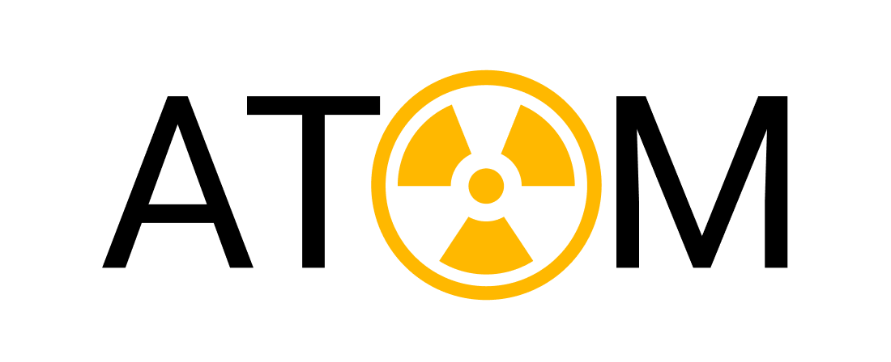

.png) | "Wielka ulga" – Powszechna ulga podatkowa: redukcja PIT do 0%, dobrowolność składek ZUS oraz zniesienie akcyzy na benzynę, obcięcie wydatków. |
.png) | "Precz z dochodowym" - Obniżenie podatku dochodowego.
|
.png) | "Uran+" - Nawiązanie współpracy z Republiką Francuską w kwestii energetyki jądrowej w Polsce i krajach Unii Europejskiej.
|
|  | "POLATOM" - Utworzenie pierwszej elektrowni jądrowej na terenie Rzeczpospolitej Polskiej.
|
| "Polska w rękach Polaków" - Decentralizacja i debiurokratyzacja państwa
|
.png) | "Złoty polski" - Utrzymanie waluty narodowej, tj. złotego.
|
.png) | "Nowa szkoła" - Nawiązanie ścisłej współpracy z Republiką Finlandii w kwestii rozwoju edukacji na wszystkich jego szczeblach oraz całkowita przebuda systemu Ministerstwa Edukacji i Nauki.
|
.png) | "Wschodnia Współpraca Gospodarcza" - Nawiązanie ścisłej współpracy gospodarczej z krajami wschodnimi nie należącymi do OBWE (Łotwa, Estonia, Ukraina). |
.png) | "#Chrońmydomu" - Legalizacja oraz łatwiejszy broni palnej w Polsce (podobne do obecnego prawa w Czechach).
|
.png) | "Nie dla eutanazji" - Zabronienie stosowania eutanazji bez zgody osoby, na której ten zabieg ma być wykonany.
|